Tema 0
El examen tuCertiCyL
Qué es, cómo te apuntas y cómo es la prueba.
←→ para moverte · B buscar · P pantalla completa
Basado en el curso «Soy competente digital», de CyL Digital (Junta de Castilla y León), y en la demo del examen de tuCertiCyL. Material no oficial. Licencia CC BY-NC-SA 4.0.
Tema 0
Qué vas a estudiar
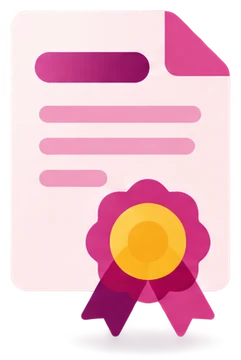
Qué es tuCertiCyL
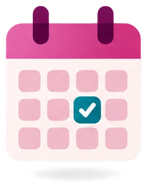
Cómo apuntarse
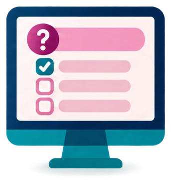
Cómo es el examen
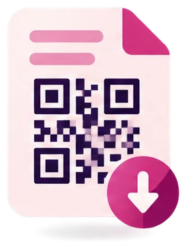
Después del examen
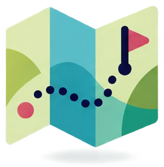
Cómo usar este curso
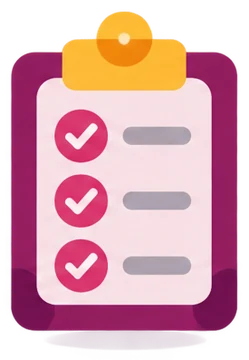
Comprueba
0
El examen tuCertiCyL
Este tema no tiene preguntas en el examen. Te prepara para el día de la prueba.
Qué vas a saber hacer
- Explicar qué certifica tuCertiCyL.
- Apuntarte a un examen.
- Reconocer los tipos de pregunta: test, emparejar, ordenar, simulación y reto.
- Saber qué necesitas para aprobar.
- Usar este curso para prepararte.
0.1 · Qué es tuCertiCyL
tuCertiCyL
tuCertiCyL es el sistema de la Junta de Castilla y León para certificar las competencias digitales de la ciudadanía.
Certificar es demostrar de forma oficial lo que sabes hacer. Una competencia digital es saber usar Internet y la tecnología para una tarea: buscar información, comunicarte, crear contenidos, protegerte o resolver problemas.
- Se parece a los niveles de idiomas (A1, A2, B1…), pero para el uso de Internet y la tecnología.
- El certificado es oficial: lo firma la Junta de Castilla y León.
- Es gratuito. Puedes examinarte desde los 14 años.
- Sirve para tu currículum y para buscar trabajo.
0.1 · Qué es tuCertiCyL
DigComp: el marco europeo
DigComp es el marco europeo de competencias digitales.
Un marco es una lista común que dice qué tienes que saber hacer y en qué nivel.
- Lo ha hecho la Comisión Europea.
- Organiza las competencias digitales en 5 áreas y 21 competencias.
- Tiene 8 niveles, del 1 al 8.
- El examen de tuCertiCyL sigue este marco.
0.1 · Qué es tuCertiCyL
Las 5 áreas del examen
| Área | Competencias | Preguntas en el examen | Tema del curso |
|---|---|---|---|
 1 · Búsqueda, evaluación y gestión de la información 1 · Búsqueda, evaluación y gestión de la información | 3 | 9 | Tema 1 |
 2 · Comunicación y colaboración 2 · Comunicación y colaboración | 6 | 18 | Tema 2 |
 3 · Creación de contenidos 3 · Creación de contenidos | 4 | 12 | Tema 3 |
 4 · Seguridad, bienestar y uso responsable 4 · Seguridad, bienestar y uso responsable | 4 | 12 | Tema 4 |
 5 · Resolución de problemas 5 · Resolución de problemas | 4 | 12 | Tema 5 |
| Total | 21 | 63 |
0.1 · Qué es tuCertiCyL
Nivel básico y nivel medio
tuCertiCyL tiene dos exámenes de competencias digitales para la ciudadanía.
Nivel básico
Es el de este curso- Nivel A2.
- Es el nivel 2 de DigComp.
- 63 preguntas: 3 por cada competencia.
- Para aprobar: el 50 % de cada área y el 75 % del examen.
Nivel medio
Más difícil- Nivel B2.
- Es el nivel 4 de DigComp.
- 63 preguntas: 3 por cada competencia.
- Las mismas normas para aprobar.
0.2 · Cómo apuntarse
Crea tu cuenta y busca un examen
Una convocatoria es un examen con fecha, hora y lugar. Te apuntas en la web tucerticyl.es.
- Entra en tucerticyl.es y pulsa Regístrate. Escribe tus datos, tu DNI o NIE, tu correo y una contraseña. Activa la cuenta con el correo que te llega.
- Abre el menú Exámenes › Buscador de próximas convocatorias.
- En Tipo de certificación, elige «Certificación en competencias digitales para la ciudadanía: nivel básico».
- En Modalidad, elige Presencial. Después elige tu Provincia.
- Pulsa Buscar. Sale la lista de próximas convocatorias.
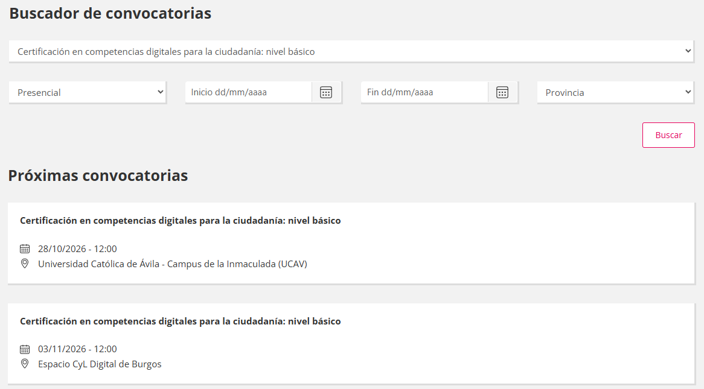
Captura de la web tucerticyl.es (Junta de Castilla y León), 24-10-2026.
0.2 · Cómo apuntarse
Inscríbete en una convocatoria
- En la lista, pulsa la convocatoria que te venga bien: mira la fecha, la hora y el centro.
- Pulsa Inscribirme.
- Entra con tu cuenta para terminar la inscripción.
El plazo de inscripción es el último día para apuntarte. El botón Ver normas abre las normas del examen.
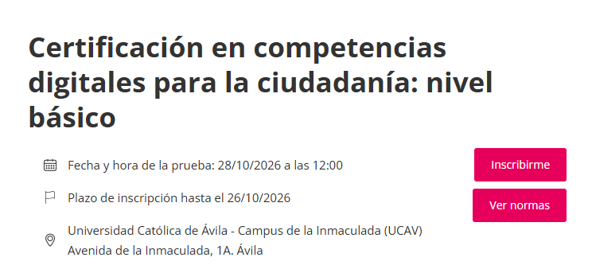
Captura de la web tucerticyl.es (Junta de Castilla y León), 24-10-2026.
0.2 · Cómo apuntarse
Normas para apuntarte y examinarte
| Norma | Qué dice |
|---|---|
| Edad mínima | 14 años para el examen presencial. 18 años para el examen online. |
| Dónde | En un centro certificador, como los Espacios CyL Digital de las capitales de provincia. Desde los 18 años, también online. |
| Documento | Lleva tu DNI o NIE. Durante el examen está encima de la mesa, a la vista. |
| Hora | Llega al centro al menos 30 minutos antes. |
| Prohibido | Usar apuntes o aparatos como el móvil. |
| Una convocatoria por nivel | Solo puedes estar apuntado a una convocatoria de cada nivel. |
| Si suspendes o no vas | Esperas 1 mes para volver a apuntarte. |
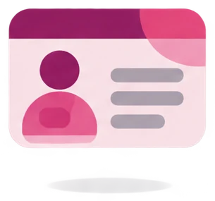
0.2 · Cómo apuntarse
Adaptaciones del examen
Puedes pedir más tiempo, un ordenador adaptado o preguntas accesibles.
La lectura fácil es una forma de escribir con frases cortas y palabras sencillas.
El examen de nivel básico tiene una versión en lectura fácil. La ha adaptado Plena inclusión Castilla y León.
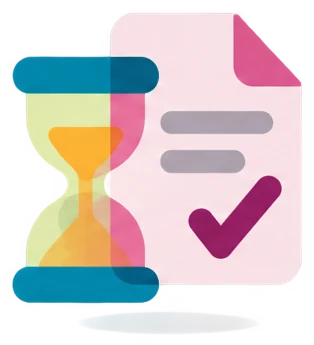
0.3 · Cómo es el examen
63 preguntas en 90 minutos
preguntas: 3 por cada una de las 21 competencias.
minutos: 1 hora y media.
segundos de media por pregunta: 1 minuto y 25 segundos.
En cada competencia hay:
2 preguntas de conocimientos
Son de teoría. Por ejemplo, un test.
1 pregunta de habilidades
Es práctica. Por ejemplo, una simulación o un reto.
0.3 · Cómo es el examen
Cómo se aprueba
Aciertas al menos el 50 % de las preguntas de cada área.
Y aciertas al menos el 75 % de todas las preguntas del examen.
Es la norma del examen real (ficha oficial). La demo pide más: el 75 % de cada área.
Cada cuadrado es una pregunta del examen
Todo el examen: 63 preguntas. Tienes que acertar al menos 48 (el 75 %).
0.3 · Cómo es el examen
La pantalla del examen
Respondes en el orden que quieras. Puedes cambiar una respuesta, salvo en las simulaciones.
- La pregunta. Debajo, en rojo, cómo responder.
- Marcar ☆: para revisarla después.
- Guardar: guarda tu respuesta. Púlsalo siempre.
- Tiempo que te queda.
- Preguntas respondidas.
- Finalizar examen: terminas y ves el resultado.
- Panel por áreas: pulsa un número para ir a esa pregunta. Las respondidas salen en rosa. La pregunta en la que estás también.
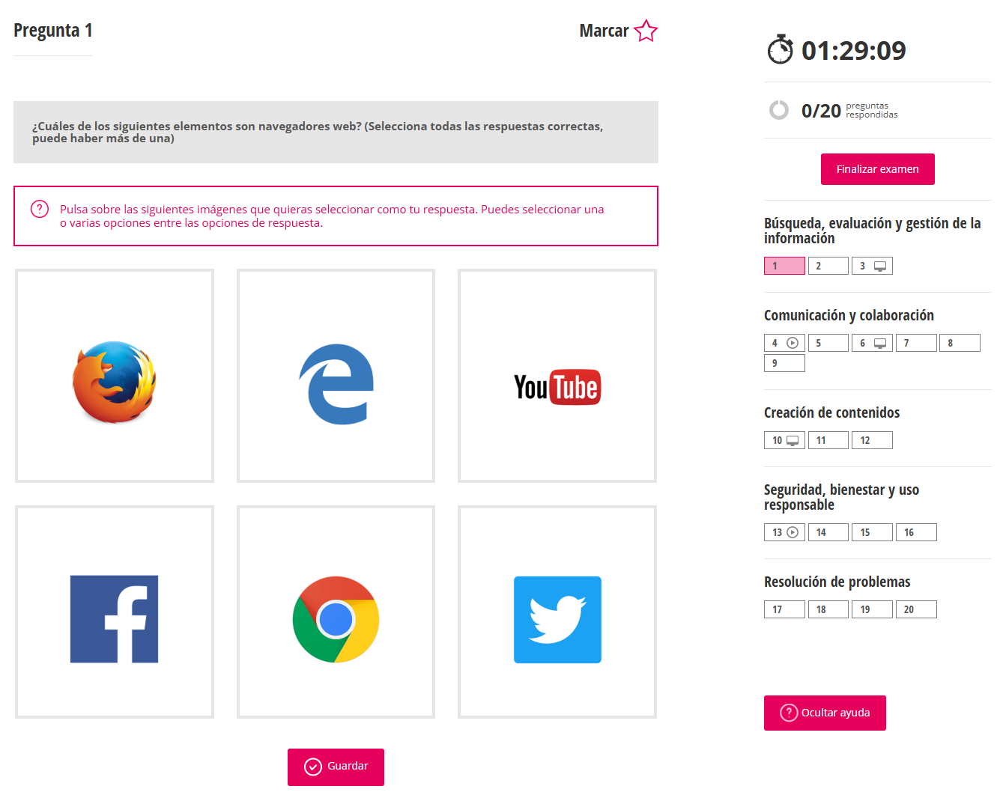
1 2 3 4 5 6 7Pantalla de la pregunta 1 de la demo de tuCertiCyL (Junta de Castilla y León).
0.3 · Cómo es el examen
Preguntas de test, emparejar y ordenar
| Tipo | Cómo respondes | Ejemplo de la demo |
|---|---|---|
| Test de una respuesta | Eliges una opción. | Pregunta 2: ¿cuál es la fuente más fiable? |
| Test de varias respuestas | Eliges todas las correctas. El enunciado dice «puede haber más de una». A veces las opciones son imágenes. | Pregunta 1: ¿qué elementos son navegadores web? |
| Emparejar | Ordenas la segunda lista para que cada elemento quede junto a su pareja. | Pregunta 9: SMS, chat y email. |
| Ordenar | Pones los elementos en orden. | No sale en la demo. Hay una en el Comprueba de este tema. |
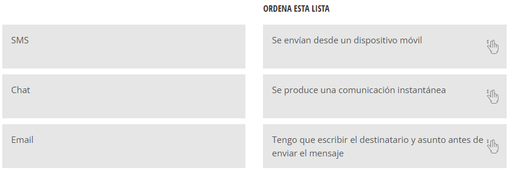
Pregunta 9 de la demo de tuCertiCyL (Junta de Castilla y León). En la captura ya está resuelta.
0.3 · Cómo es el examen
Simulaciones
Una simulación imita una pantalla de Windows o de un programa. Haces clic como en el ordenador de verdad.
En el panel, la lleva el icono ► (play):
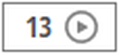
- Puedes fallar un clic. Con el segundo clic fallado, la pregunta queda anulada: no cuenta.
- Es la única pregunta en la que no puedes cambiar la respuesta.
- No puedes usar atajos de teclado, salvo que el enunciado lo diga.
- A veces también escribes un texto. Por ejemplo, una dirección de correo.
- Las pantallas son de Windows 10 y de programas antiguos, como Outlook 2016.
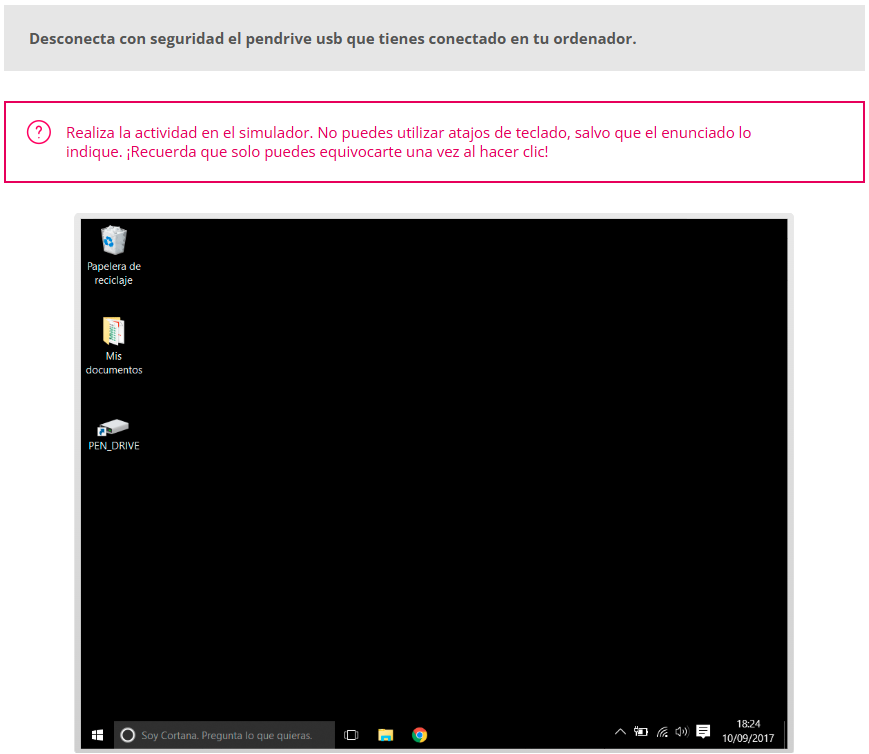
Pregunta 13 de la demo de tuCertiCyL (Junta de Castilla y León).
0.3 · Prueba · pregunta 13 de la demo
Prueba una simulación
Pantallas de la pregunta 13 de la demo de tuCertiCyL (Junta de Castilla y León).
0.3 · Cómo es el examen
Retos
Un reto es un ejercicio práctico con el ordenador. Lo resuelves con un programa, fuera del navegador.
En el panel, lo lleva el icono de un monitor:
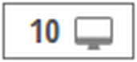
- Pulsa Descargar para bajar el archivo.
- Minimiza el navegador. No lo cierres.
- Abre el archivo con Office o LibreOffice y haz lo que pide el enunciado.
- Vuelve al navegador. Escribe la respuesta o elígela entre las opciones.
- Pulsa Guardar.
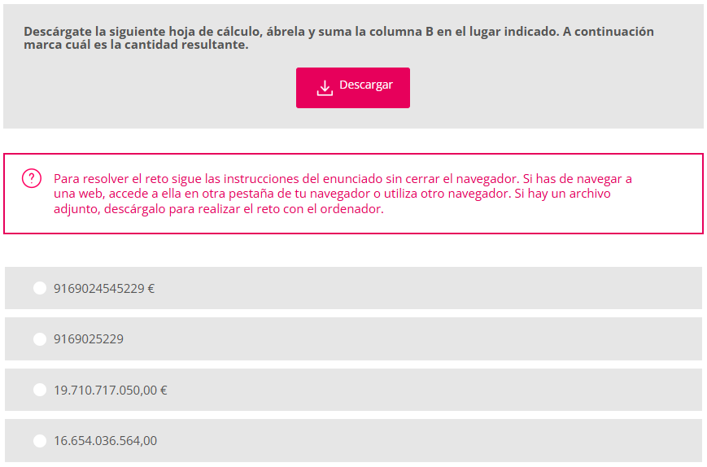
Pregunta 10 de la demo de tuCertiCyL (Junta de Castilla y León).
0.3 · Prueba · pregunta 10 de la demo
Prueba un reto
Archivo de la pregunta 10 de la demo de tuCertiCyL (Junta de Castilla y León).
0.3 · Cómo es el examen
Consejos para el día del examen
- Llega 30 minutos antes. Lleva tu DNI o NIE.
- Lee el enunciado entero antes de responder.
- En las simulaciones, mira toda la pantalla antes de hacer clic.
- Pulsa Guardar en cada pregunta. Si dudas, pulsa Marcar y vuelve al final.
- Mira el tiempo de vez en cuando. Tienes unos 85 segundos por pregunta.
- En los retos, minimiza el navegador. No lo cierres.
0.4 · Después del examen
El resultado y el certificado
Al pulsar Finalizar examen, ves el resultado: el porcentaje de aciertos de cada área y la nota global. Apto significa aprobado.
SI APRUEBAS, DESCARGA TU CERTIFICADO
- Entra en tucerticyl.es con tu cuenta.
- Arriba a la derecha, pulsa tu nombre y entra en Mi perfil.
- Busca el apartado Certificados obtenidos.
- Pulsa el icono de la flecha hacia abajo. El certificado se descarga en PDF.
Tus notas también están en tu área personal, en la pestaña Exámenes realizados › Ver notas.
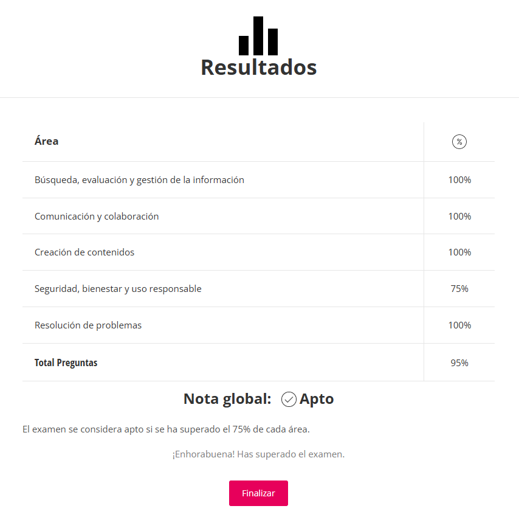
Pantalla de resultados de la demo de tuCertiCyL (Junta de Castilla y León).
0.4 · Después del examen
Tu certificado
| Qué tiene | Para qué sirve |
|---|---|
| Firma de la Junta de Castilla y León | Es un certificado oficial y electrónico, en PDF. |
| Código QR | Con la cámara del móvil, cualquiera comprueba que es auténtico y que está vigente. Vigente significa que no ha caducado. |
| Fecha | Caduca a los 4 años. |
| Icono de la cadena | Te da un enlace para compartirlo. Pulsa Copiar enlace y ponlo en tu currículum o en LinkedIn. |
También puedes comprobar un certificado en tucerticyl.es › Exámenes › Verificar diploma.
0.5 · Cómo usar este curso
Cómo está organizado el curso
| Tema | Tiempo |
|---|---|
| Tema 0 · El examen tuCertiCyL | 30 minutos |
| Tema 1 · Buscar y gestionar información | 2 horas |
| Tema 2 · Comunicación y colaboración | 3 horas |
| Tema 3 · Creación de contenidos | 2 horas y media |
| Tema 4 · Seguridad, bienestar y uso responsable | 2 horas y media |
| Tema 5 · Resolución de problemas | 2 horas |
| Simulacro del examen | 1 hora y media |
| Total | Unas 14 horas |
CADA COMPETENCIA TIENE
- Qué vas a saber hacer: lo que aprendes.
- Explicación: diapositivas con lo que entra en el examen.
- Así lo pregunta el examen: una pregunta de la demo o del mismo estilo, explicada.
- Comprueba: 3 preguntas como las del examen.
Cada tema termina con un resumen y un test de repaso. Al final está el simulacro: un examen completo de 63 preguntas.
0.5 · Cómo usar este curso
Tu plan de estudio
- Haz un tema por semana, en orden.
- Repite cada Comprueba hasta acertar las 3 preguntas.
- Haz la demo oficial en tucerticyl.es/demo.
- Haz el simulacro hasta acertar el 75 % en cada área.
- Apúntate al examen.
Teclas del curso
← → retroceder y avanzar
B buscar en el tema
P pantalla completa
La pastilla de arriba a la derecha (por ejemplo, 0.5) te lleva al índice del tema.
Tema 0 · El examen tuCertiCyL
Comprueba lo que has aprendido
Fin del tema 0
Empieza por el tema 1
Tema 0
El examen tuCertiCyL
Ya sabes cómo es el examen. Ahora empieza a prepararlo con el tema 1: Buscar y gestionar información.
Basado en el curso «Soy competente digital», de CyL Digital (Junta de Castilla y León): Creative Commons, uso no comercial, citando la fuente. Usa la demo y la web de tuCertiCyL (Junta de Castilla y León) sin fines comerciales, citando la fuente: pantallas de las preguntas 1, 9, 10 y 13 y de los resultados de la demo. Curso: CC BY-NC-SA 4.0.